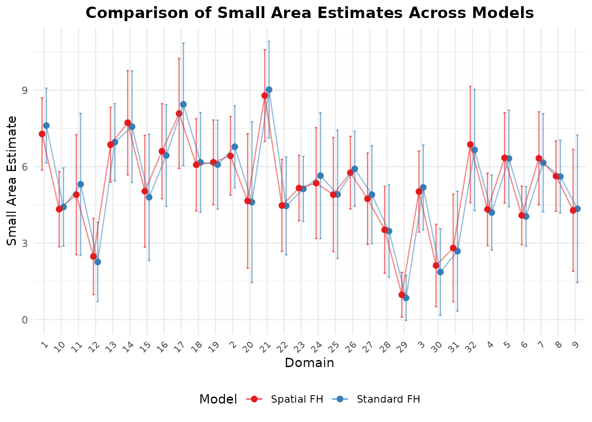

Overview
When small areas are geographic units (such as counties, regencies, or districts), spatial correlation frequently occurs: neighboring areas tend to have more similar outcomes than distant ones. Furthermore, when surveys are repeated over multiple years, temporal correlation between time periods is also present.
fastsae provides specialized, high-performance
implementations for both: 1. Spatial Fay-Herriot
(eblup_sfh): Simultaneous Autoregressive SAR(1)
random effects. 2. Spatio-Temporal Fay-Herriot
(eblup_stfh): Combined spatial SAR(1) and temporal
AR(1) random effects.
1. Spatial Fay-Herriot Model (eblup_sfh)
Model Formulation
The Spatial Fay-Herriot model (Pratesi & Salvati, 2008) models area random effects using a Simultaneous Autoregressive (SAR(1)) process:
where: - is a known row-standardized spatial proximity matrix (). - is the spatial autoregressive parameter. - is independent innovation noise. - is sampling error with diagonal matrix .
Fitting the Model
library(fastsae)
data("mys")
data("mys_proxmat")
# Fit Spatial Fay-Herriot model with REML
fit_sfh <- eblup_sfh(
formula = y ~ x1 + x2 + x3,
vardir = ~vardir,
data = mys,
W = mys_proxmat,
method = "REML",
print_result = FALSE
)
summary(fit_sfh)
#>
#> ── Summary of fastsae Fit ──────────────────────────────────────────────────────
#> Call :
#> eblup_sfh(formula = y ~ x1 + x2 + x3, vardir = ~vardir, data = mys, method =
#> "REML", W = mys_proxmat, print_result = FALSE)
#>
#> ✔ Convergence: Yes (in 18 iterations)
#> Model: Spatial Fay-Herriot (Area-level SAR)
#> Method: REML
#>
#> Variance & Correlation Components:
#> parameter estimate std.error
#> sigma2_u 0.9892261 0.4797447
#> rho -1.0000000 NA
#> rho (spatial): -1
#>
#> Coefficients:
#> beta std.error zvalue pvalue
#> (Intercept) 3.2570714 0.6265689 5.1982651 0.0000
#> x1 -0.0020340 0.0080925 -0.2513457 0.8015
#> x2 0.0568516 0.0525488 1.0818827 0.2793
#> x3 0.0252179 0.0497283 0.5071123 0.6121
#>
#> Goodness of Fit:
#> loglikelihood AIC BIC
#> -62.58874 137.17748 145.97189
#>
#> EBLUP Summary Statistics:
#> mse rse
#> Min. :0.1966 Min. : 9.384
#> 1st Qu.:0.5897 1st Qu.:13.643
#> Median :0.8169 Median :19.046
#> Mean :1.0420 Mean :22.242
#> 3rd Qu.:1.4214 3rd Qu.:27.305
#> Max. :2.1610 Max. :46.894Unsampled Domains and Spatial Kriging
A major advantage of eblup_sfh in
fastsae is its automatic handling of unsampled domains
(domains with y = NA). Instead of throwing an error or
requiring manual subsetting, eblup_sfh automatically
performs full-spatial kriging:
# Count sampled vs unsampled domains
table(is.na(mys$y))
#>
#> FALSE TRUE
#> 32 10
# Inspect estimates for unsampled domains
head(fit_sfh$df_eblup[is.na(mys$y), ])
#> domain y vardir eblup random_effect mse rse
#> 21 21 NA 0 4.136624 0.33273263 1.773635 32.19482
#> 25 25 NA 0 3.666578 -0.63352730 1.606281 34.56606
#> 26 26 NA 0 6.293404 0.82251711 1.962186 22.25792
#> 27 27 NA 0 5.185438 0.66260236 1.879788 26.44046
#> 28 28 NA 0 5.159499 -0.02771458 1.448608 23.32748
#> 34 34 NA 0 3.834916 0.17166576 1.587847 32.85856For unsampled areas, prediction borrows strength from both the regression synthetic component and spatial proximity to neighboring sampled areas through .
Multi-Threaded Bootstrap MSE
In addition to analytical Prasad-Rao style MSE,
eblup_sfh supports multi-threaded OpenMP bootstrap MSE
estimation:
- Parametric Bootstrap
(
mse_type = "pbmse") - Non-Parametric Bootstrap
(
mse_type = "npbmse")
fit_sfh_pb <- eblup_sfh(
formula = y ~ x1 + x2 + x3,
vardir = ~vardir,
data = mys,
W = mys_proxmat,
mse_type = "pbmse",
B = 50,
n_threads = 2,
seed = 123,
print_result = FALSE
)
#> ℹ 10 unsampled domain(s) detected. Bootstrap MSE (pbmse) is computed for the 32 sampled domain(s); unsampled domain(s) get a full-spatial synthetic (kriging) prediction and analytical MSE instead.
head(fit_sfh_pb$df_eblup[, c("domain", "y", "eblup", "mse", "mse_pb", "mse_pbbc")])
#> domain y eblup mse mse_pb mse_pbbc
#> 1 1 8.359527 7.535193 0.4999462 0.5838185 0.5822064
#> 2 2 7.599650 6.564385 0.5831410 0.7059036 0.6571795
#> 3 3 5.514137 5.109460 0.6095214 0.7555265 0.6814817
#> 4 4 3.869326 4.273391 0.5018535 0.5742035 0.5552008
#> 5 5 6.305063 6.791422 0.7644430 0.7705470 0.8859110
#> 6 6 3.926807 4.016701 0.3398919 0.3798275 0.37127042. Spatio-Temporal Fay-Herriot Model (eblup_stfh)
Model Formulation
The Spatio-Temporal model (Marhuenda, Molina, & Morales, 2013) combines spatial correlation and temporal autoregression for areas over time periods. The panel does not need to be complete: cells without a direct estimate are predicted (see below).
where: - captures static spatial effects: . - captures dynamic temporal effects for area : . - are sampling errors.
The model is defined on the full grid: on all domains of , on all periods.
Fitting the Spatio-Temporal Model
data("mys_panel")
# 42 domains x 11 years; y is NA for the two domains that are never sampled
table(sampled = !is.na(mys_panel$y))
#> sampled
#> FALSE TRUE
#> 22 440
# Fit Spatio-Temporal model with the analytical MSE, on the full panel and full W
fit_stfh <- eblup_stfh(
formula = y ~ x1 + x2 + x3,
data = mys_panel,
vardir = ~vardir,
domain = ~area,
time = ~year,
W = mys_proxmat,
model = "ST",
mse_type = "analytical",
print_result = FALSE
)
summary(fit_stfh)
#>
#> ── Summary of fastsae Fit ──────────────────────────────────────────────────────
#> Call :
#> eblup_stfh(formula = y ~ x1 + x2 + x3, vardir = ~vardir, data = mys_panel,
#> domain = ~area, time = ~year, W = mys_proxmat, model = "ST", mse_type =
#> "analytical", print_result = FALSE)
#>
#> ✔ Convergence: Yes (in 11 iterations)
#> Model: Spatio-Temporal Fay-Herriot (SAR + AR(1) time effects)
#> Method: REML
#> Cells without a direct estimate: 22 of 462 (predicted from the model)
#>
#> Variance & Correlation Components:
#> estimate std.error
#> 2.2066952 0.64896010
#> -0.9011506 0.31237444
#> 0.0000000 0.02602554
#> 0.7526384 NA
#>
#> Coefficients:
#> beta std.error zvalue pvalue
#> (Intercept) 4.4442780 0.4445132 9.9980779 0.0000
#> x1 -0.0008817 0.0060240 -0.1463646 0.8836
#> x2 0.0254871 0.0277726 0.9177081 0.3588
#> x3 0.0163716 0.0256365 0.6386035 0.5231
#>
#> Goodness of Fit:
#> loglikelihood AIC BIC
#> -597.2647 1210.5294 1243.2236
#>
#> EBLUP Summary Statistics:
#> mse rse
#> Min. :0.03199 Min. : 2.997
#> 1st Qu.:0.08171 1st Qu.: 5.256
#> Median :0.11107 Median : 6.117
#> Mean :0.25728 Mean : 29.722
#> 3rd Qu.:0.16233 3rd Qu.: 9.613
#> Max. :2.47830 Max. :2521.153The estimated variance and correlation components include: -
sigma21: Spatial random effect variance
().
- rho1: Spatial autocorrelation
().
- sigma22: Temporal random effect variance
().
- rho2: Temporal AR(1) autoregression coefficient
().
The analytical MSE is
(Prasad-Rao type, with the exact derivative of the EBLUP in
and the curvature term
for the nonlinear
,
);
the components are returned as fit_stfh$g1, …,
fit_stfh$g4. A parametric bootstrap MSE is available with
mse_type = "bootstrap" (and B,
seed).
Unsampled Domains and Missing Periods
Rows whose response is NA are kept and predicted, as
long as the auxiliary variables are known there. The variance components
are estimated from the sampled cells only (the marginal likelihood with
the missing cells integrated out), and each missing cell gets the best
linear unbiased predictor given the sampled data (Saei & Chambers,
2005; Benedetti et al., 2024):
- a missing period of a sampled domain borrows from the other periods of that domain (AR(1) correlation) and from the neighbouring domains (SAR);
- a domain that is never sampled is predicted from
its neighbours only (spatial kriging), so
Wmust keep it.
est <- fit_stfh$df_eblup
# Cells predicted without a direct estimate
head(est[!est$sampled, c("domain", "time", "eblup", "mse", "rse")])
#> domain time eblup mse rse
#> 21 21 2016 6.356729 2.389320 24.31664
#> 25 25 2016 3.225462 2.405876 48.08889
#> 63 21 2017 6.367907 2.385248 24.25326
#> 67 25 2017 3.213502 2.416602 48.37534
#> 105 21 2018 6.361026 2.389905 24.30319
#> 109 25 2018 3.174470 2.438947 49.19602
# Their MSE is larger: no direct estimate, only borrowed strength
tapply(est$mse, ifelse(est$sampled, "sampled", "unsampled"), median)
#> sampled unsampled
#> 0.1084668 2.4016341For these cells the analytical MSE is ( from the exact derivative of the predictor in the variance components); the bootstrap generates the random effects on the full grid and covers every cell too.
3. Comparing Models with autoplot
You can directly compare EBLUP estimates and uncertainty across
different models using autoplot():
# Compare Fay-Herriot vs Spatial Fay-Herriot
fit_fh <- eblup_fh(y ~ x1 + x2 + x3, vardir = ~vardir, data = na.omit(mys), print_result = FALSE)
W_clean <- mys_proxmat[!is.na(mys$y), !is.na(mys$y)]
fit_sfh_clean <- eblup_sfh(y ~ x1 + x2 + x3, vardir = ~vardir, data = na.omit(mys), W = W_clean, print_result = FALSE)
#> Warning: `W` is not row-standardised: some rows do not sum to 1.
#> ℹ The SAR model with rho in (-1, 1) assumes rows summing to 1; use `W /
#> rowSums(W)` or `create_weights(style = "W")`.
autoplot(list("Standard FH" = fit_fh, "Spatial FH" = fit_sfh_clean), type = "comparison")
4. Bayesian Spatio-Temporal Modeling (hb_area)
In addition to frequentist C++ EBLUP implementations
(eblup_sfh and eblup_stfh),
fastsae provides hb_area() for Bayesian
spatio-temporal modeling powered by INLA. This
supports: - Bounded proportions via Beta regression (matching
tipsae) - Discrete counts via Poisson and Negative Binomial
regression - Binary aggregates via Binomial regression - Flexible
space-time structures including domain-specific random walks, separable
dynamic fields, and Knorr-Held Types I–IV.
For full details and a case study on Italian poverty data, see the vignette Bayesian Area-Level Small Area Estimation with INLA.
References
- Benedetti, R., Piersimoni, F., Pratesi, M., Salvati, N., & Suesse, T. (2024). Handling out-of-sample areas to estimate the unemployment rate at local labour market areas in Italy. International Statistical Review. https://doi.org/10.1111/insr.12596
- Marhuenda, Y., Molina, I., & Morales, D. (2013). Small area estimation with spatio-temporal Fay-Herriot models. Computational Statistics & Data Analysis, 58, 308–325.
- Pratesi, M., & Salvati, N. (2008). Small area estimation: The EBLUP estimator based on spatially correlated random area effects. Statistical Methods & Applications, 17(1), 113–141.
- Saei, A., & Chambers, R. (2005). Out of sample estimation for small areas using area level data. Southampton Statistical Sciences Research Institute, Methodology Working Paper M05/11.